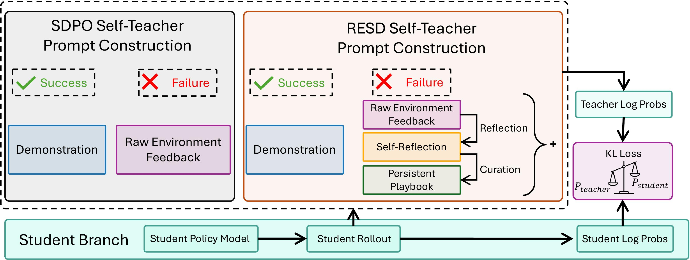
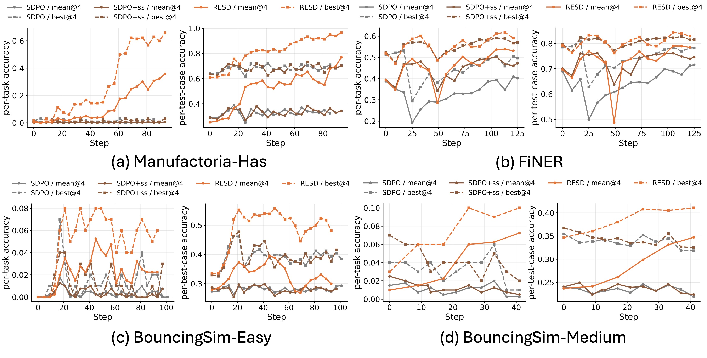
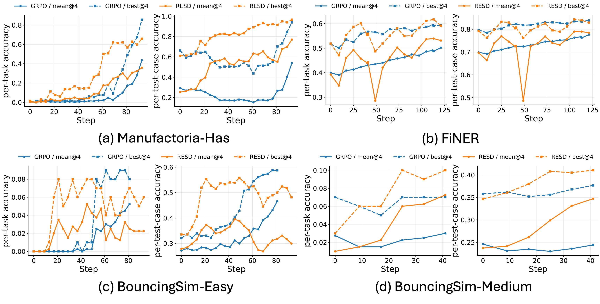

1. 来源地图：这条 X 到底指向什么
2. 推文主张：失败本身不是学习信号，解释后的失败才可能是
- On-policy self-distillation 看起来适合从文本反馈学习，但问题是：它能否真正从 failed trajectories 学到东西？作者的回答是：不太能，除非模型主动解释失败。
- 现有 SDPO 在样本充足时会借助 successful peer solutions。一旦限制 rollout 数量，让同一 prompt 没有成功 peer demonstration 可看，性能明显下降。
- RESD 的改动是把 raw environment feedback 先变成 local reflection，再把反复出现的经验沉淀进 persistent playbook。
- 在 rare-success regime 中，RESD 相比 SDPO 类 self-distillation baseline 表现更强；相比 GRPO，它在早期训练阶段用更少 rollout 更快提升。
- 作者还强调了一个机制性观察：RESD 的 teacher 更“纠错”，distillation loss 更集中在 reasoning-decision tokens 上。
作者回复里补充了一个有用信息：去掉 teacher prompt 中的 playbook 会显著掉点，Manufactoria-Has 的 per-test-case accuracy 降 16%，BouncingSim-Easy 降 6%；playbook 的一个关键维护机制是每隔几步压缩，避免过长。
3. 问题背景：为什么 SDPO 会卡在 rare-success 场景
On-policy
训练数据来自当前正在训练的模型自己生成的 rollout，而不是固定离线数据。好处是分布匹配，坏处是当前模型很弱时会生成大量失败轨迹。
Self-distillation
teacher 不是另一个强得多的外部模型，而是学生模型的当前或 EMA 版本，只是 teacher 能看到 privileged context，例如环境反馈、成功样例、playbook。
Token-level supervision
不是只给一条成功/失败奖励，而是在每个生成位置上给一个 teacher distribution。学生优化目标是让自己的 token 分布接近 teacher。
SDPO 的问题在于，它虽然把环境反馈给 teacher 看，但这些反馈很多时候只是诊断性的。例如代码执行失败会告诉你哪个 test case 没过、哪个状态机 parse error，却不直接告诉你“哪一步推理错了、应当如何重构策略”。如果同一 batch 里有成功 peer solution，teacher 可以用成功样例作为正例来纠正失败样本；但当任务初始成功率接近 0，batch 里几乎全是失败时，teacher 就只剩下 raw failure feedback。这时 SDPO 的监督会变弱。
4. RESD 方法：从 rollout 到 reflection，再到 playbook，再到 KL loss

RESD 官方 workflow：student rollout 产生反馈；失败样本进入 reflection 和 playbook curation；teacher 使用 enriched context 生成 token-level log probabilities。
4.1 一次训练 step 发生什么
- Student rollout：当前策略 πθ 对 prompt `x` 生成回答 `y`。
- Environment feedback：环境执行或评估 `y`，得到 reward `R(x,y)` 和详细反馈 `c(x,y)`。例如 Manufactoria 会检查 DSL 状态机能否通过所有 tape test cases。
- Context update：如果 rollout 失败，模型调用 reflector 生成 reflection `r`，解释失败原因，并给已有 playbook 条目打 helpful / harmful / neutral 标签；curator 再把新的、非重复的 lesson 加入 playbook。
- Solution buffer：如果 rollout 成功，则把成功轨迹缓存到 solution buffer，之后同一问题或相近训练上下文可以作为 teacher prompt 的成功参考。
- Teacher prompt construction：把 playbook、reflection、previous trial、environment feedback 和可用成功解组成 privileged context。
- Token-level distillation：teacher 在 privileged context 下计算 token 分布，student 在普通上下文下计算 token 分布，训练 student 去匹配 teacher。
4.2 损失函数直觉
论文把 self-distillation 写成 f-divergence 的统一形式。对每个 token 位置 `t`，teacher 和 student 对 vocabulary 中每个 token `v` 给出概率。令 teacher/student 的概率比为：
然后对所有 token 位置求期望，最小化一个 f-divergence。实现上论文报告默认多用 reverse KL 或 JSD，并对 top-100 tokens 做 distillation。直觉上，这不是奖励某个最终答案，而是在每个位置问：如果 teacher 看到了失败解释和 playbook，它会不会更偏好另一个 reasoning decision？如果会，student 就朝这个方向更新。
4.3 playbook 到底是什么
代码里 playbook 不是抽象比喻，而是带 ID、helpful/harmful 计数的自然语言 bullet 列表。典型格式类似：
[ctx-00001] helpful=2 harmful=0 :: When matching a target substring, skip non-pattern symbols instead of rejecting immediately.reflection prompt 要求模型输出：错误识别、root cause、正确做法、key insight，并给每个已有 bullet 打标签。curator prompt 要求只输出 JSON operations，只新增当前 playbook 缺失的 insight，不重写整个 playbook。`playbook_utils.py` 里会解析 bullet、更新 helpful/harmful 计数，并在重建时丢弃不符合格式的泄漏行。
这点很重要：RESD 的“记忆”不是直接把所有失败日志越堆越长，而是用计数和 concise 策略维护一个紧凑的经验库。论文附录说默认 global playbook 跨训练样本共享，Manufactoria-Has 最多 200 条，BouncingSim/FiNER 等任务最多 120 或 150 条，定期按 staleness 或 priority 删除。
5. 评估：它到底测了什么，结果强在哪里
5.1 任务设置
| 任务 | 训练/测试量 | 模型 | 输入输出 | 为什么适合测 RESD |
|---|---|---|---|---|
| Manufactoria-Has | 742 / 132 | Qwen3-4B-Thinking-2507 | 输入字符串模式任务，输出 DSL 状态机程序 | 初始成功率接近 0，但执行器能给丰富 test-case feedback |
| BouncingSim-Easy | 640 / 100 | Qwen3-4B-Thinking-2507 | 输入 2D 碰撞场景，输出 Python 模拟代码 | 程序综合 + 物理推理，失败反馈可执行、可定位 |
| BouncingSim-Medium | 320 / 100 | Qwen3-30B-A3B-Thinking-2507 | 更难的多物体碰撞模拟 | 测试 30B-A3B 模型在更难程序任务上的提升 |
| FiNER | 1000 / 500 | Qwen3-4B-Thinking-2507 | SEC filings 中金融实体标注 | 初始成功率较高，用来检查有成功样例时 RESD 是否仍有收益 |
5.2 指标定义
- mean@4 / m@4：每个测试问题采样 4 个回答，取 4 个回答性能的平均。它衡量模型平均一次回答的稳定质量。
- best@4 / b@4：每个测试问题采样 4 个回答，取最好一个回答的性能。它衡量模型在多次采样里是否偶尔能找到正确解。
- Per-Task Accuracy：一个问题的回答必须通过所有 test cases 才算成功。对程序任务来说，这是严格 pass all。
- Per-Test-Case Accuracy：所有测试用例层面的平均通过率。即使整个程序没有全对，也能反映它修复了多少局部行为。
5.3 关键结果
| 方法 | Manufactoria-Has Per-Task m@4/b@4 | Manufactoria-Has Per-Test-Case m@4/b@4 | FiNER Per-Task m@4/b@4 | FiNER Per-Test-Case m@4/b@4 |
|---|---|---|---|---|
| Base model | 0.38 / 1.52 | 25.31 / 60.97 | 39.28 / 51.90 | 69.65 / 79.21 |
| SDPO | 0.95 / 3.79 | 37.66 / 73.55 | 40.93 / 50.50 | 71.27 / 78.21 |
| SDPO+ss | 0.57 / 2.27 | 37.97 / 71.93 | 50.25 / 59.12 | 76.15 / 82.21 |
| RESD | 35.80 / 65.91 | 76.95 / 96.53 | 53.66 / 61.12 | 78.98 / 84.32 |
最显眼的是 Manufactoria-Has：这是 rare-success 最强的场景。RESD 把 per-task m@4 从 SDPO+ss 的 0.57 提到 35.80，把 per-test-case m@4 从 37.97 提到 76.95。这个不是小幅调参收益，而是从“几乎学不动”到“能系统性修复大量局部失败”。

官方 SDPO 对比结果图。注意曲线不是只看最终点，RESD 在 streaming training 的早期也更快抬升。
5.4 和 GRPO 的比较要谨慎读
推文说 GRPO 使用 8 rollouts per prompt，而 RESD 只用 1 rollout per prompt。这是 RESD 的核心样本效率卖点。但这也意味着比较对象本质不同：GRPO 是 group-relative reward optimization，需要多条 rollout 估计组内相对优势；RESD 是单 rollout + teacher context distillation。论文的结论应读成：在有丰富执行反馈的 early-stage bootstrapping 中，结构化失败反馈比单纯多采样 sparse reward 更划算。它不证明 RESD 在训练后期或成功率较高后一定替代 GRPO。

官方 GRPO 对比图。论文还报告 per-step latency：SDPO 最低约 400s，RESD 因 reflection/curation 有额外开销，但仍低于 GRPO 的 1200s 以上。
5.5 消融实验说明哪些部件真的有用
| 变体 | Manufactoria-Has per-test m@4/b@4 | BouncingSim-Easy per-test m@4/b@4 | FiNER per-test m@4/b@4 | 解释 |
|---|---|---|---|---|
| RESD full | 76.95 / 96.53 | 38.87 / 55.80 | 78.98 / 84.32 | reflection + playbook + solution buffer 全开 |
| w/o reflection | 51.41 / 79.26 | 36.85 / 55.33 | 77.78 / 82.26 | Manufactoria 掉得最狠，说明局部失败诊断是关键 |
| w/o playbook | 60.65 / 92.37 | 32.95 / 53.60 | 77.42 / 83.07 | 没有持久经验库，跨 step 复用变弱 |
| w/o solution buffer | 60.24 / 80.10 | 31.97 / 52.40 | 78.36 / 83.42 | 成功轨迹缓存能把局部进展转成完整示范 |
6. 局限和风险：不要把 RESD 读成通用 agent 记忆解决方案
任务依赖丰富、可信的环境反馈
RESD 的强项是在程序、DSL、执行器、NER 这类可以给明确反馈的场景。开放式写作、主观偏好、长程规划失败，反馈往往不够可验证，reflection 可能会自圆其说。
reflection 本身也可能错
如果模型对失败原因诊断错误，playbook 会沉淀错误规则。代码里有 helpful/harmful 计数和 concise，但这只能缓解，不能保证每条 lesson 都是真因果。
global playbook 有迁移和污染风险
论文默认 global playbook 跨训练样本共享。它适合任务家族规则稳定的 setting；如果任务分布很混杂，旧规则可能误导新样本。
成本不是免费的
RESD 省 rollout，但增加 reflection、curation、teacher prompt 计算。它更像“用推理和记忆换采样”，不是绝对降低所有计算。
7. 我的 insight：RESD 真正有价值的地方是把反馈从 prompt trick 变成训练系统状态
我认为 RESD 的贡献不在于“reflection”这个词，而在于它把 reflection 放进了一个可更新、可筛选、可复用、能影响 token-level loss 的闭环。
很多 self-reflection 方法的问题是，反思只发生在推理时：模型失败了，再让它想一想，然后重新回答。这种做法对单题 retry 有用，但不一定会进入参数。RESD 的不同之处是：失败解释先影响 teacher distribution，然后通过 distillation loss 进入 student 参数。也就是说，它把一次失败的自然语言诊断转译成下一次训练更新的 token 概率偏移。
这也解释了为什么它在 Manufactoria 这种任务上效果大：任务有明确的局部规则，失败反馈可执行，reflection 能把 “parse error / wrong tape behavior / infinite loop” 映射成稳定的编程规则。playbook 又让这些规则跨样本复用。相比之下，GRPO 的 scalar reward 虽然更原则化，但在成功样本很少时，reward 只告诉模型“这条不行”，不告诉它“为什么不行”。
如果要把 RESD 用到更一般的 agent memory / continual learning，我会优先看三个问题：第一，feedback 是否足够 grounded，能否被程序或 judge 稳定验证；第二，playbook 是 global、per-task 还是 per-user，如何避免污染；第三，teacher prompt 中的 lesson 如何从自然语言规则升级成可检验的 causal credit assignment。
8. 本次核验命令和本地材料
opencli twitter thread "https://x.com/YuweiZh49446108/status/2054322467347542242" --limit 80 -f json
curl -Ls -o /dev/null -w "%{url_effective}\n%{http_code}\n" "https://t.co/d6xBIQvvDk"
curl -L "https://github.com/horizon-llm/RESD/raw/main/paper.pdf" -o "resd-x-analysis/refs/resd-paper.pdf"
pdfinfo "resd-x-analysis/refs/resd-paper.pdf"
pdftotext -layout "resd-x-analysis/refs/resd-paper.pdf" "resd-x-analysis/refs/resd-paper.txt"
curl -Ls "https://raw.githubusercontent.com/horizon-llm/RESD/main/README.md"
curl -Ls "https://api.github.com/repos/horizon-llm/RESD/git/trees/main?recursive=1"本地归档：
resd-x-analysis/refs/resd-paper.pdfresd-x-analysis/refs/resd-paper.txt/Users/bytedance/Downloads/resd-x-analysis.html/Users/bytedance/Downloads/resd-x-analysis-assets/
报告生成日期：2026-05-15。本文档基于 OpenCLI 抽取的 X 线程、Notion 项目页、arXiv 元数据、本地 PDF 全文和 GitHub 仓库 README/代码树交叉核验。